CYSTS LIST
- Alexandrium
- Archaeperidinium/RBSC
- Brigantedinium/Protoperidinium
- Diplopsalopsis/Protoperidinium
- Dubridinium
- Gymnodinium
- Impagidinium
- Lejeunecysta
- Nematosphaeropsis
- Peridinioids
- Polykrikos
- RBSC/Protoperidinium
- Selenopemphix
- Spiniferites
- Stelladinium
- Transparent/Hollow
- Transparent/Solid
- Transparent/Spherical
- Trinovantedinium
- Votadinium
SELENOPEMPHIX
Surface |
Shape/Processes |
Remarks |
Species |
Central body (um.) |
Image |
Faintly granulatePale brown |
PeridinioidCircular in polar view |
Granulation around apicaland antapical horns |
Selenopemphixantarctica | 40 to 102 |
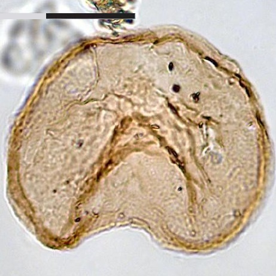 |
SmoothBrown |
PeridinioidProcess length:1.2 to 3.2 um. |
Irregular distally expandedspines restricted tothe two cingular rims |
Selenopemphixbrevispinosum | 37 to 51 |
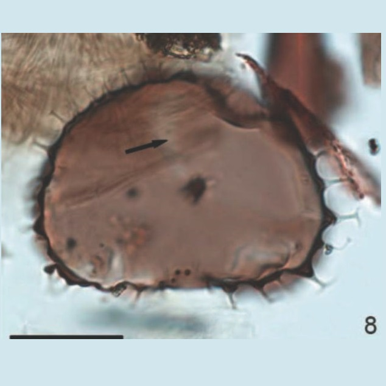 |
SmoothPale brown |
PeridinioidWider than highSpines conical and sharp (2-5 um.) |
Spines on crestsrepresenting postcingularand precingular suturesDiscontinuous crests |
Selenopemphixbrinkhuisii | 54 to 57 (L)46 to 49 (W) |
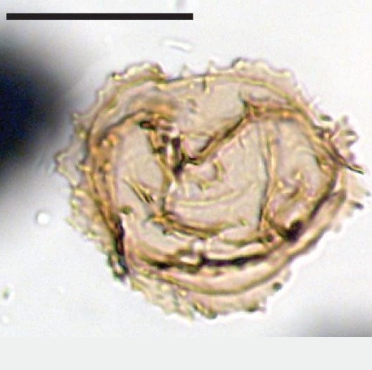 |
SmoothPale brown |
Suboval to reniformAcuminate, bifid and branched processes(4-8 um.) |
Shorter sizeNature of processes |
Selenopemphixdionaeacysta | 42 |
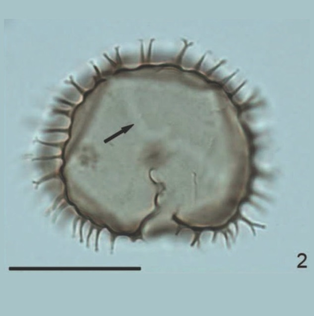 |
PsilateLight brown |
Reniform in polar viewBlunt apical hornAbsent antapical hornsBifurcate, serrated andacuminate processesonly in cingular margin |
Shorter sizeSerrated processesProcesses only in cingulum |
Selenopemphixislandensis | 42 to 64 (L)25 to 44 (W) |
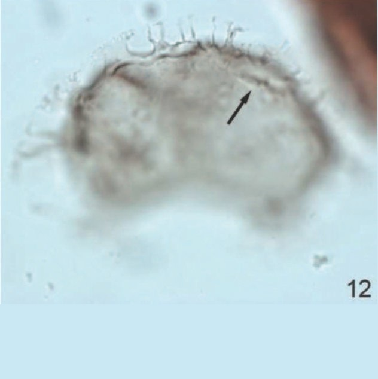 |
SmoothBrown |
Reniform in polar viewRounded apical and antapical hornsNo processes |
Extremely wide cingulumRounded horns |
Selenopemphixnephroides | 48 to 60 (D) |
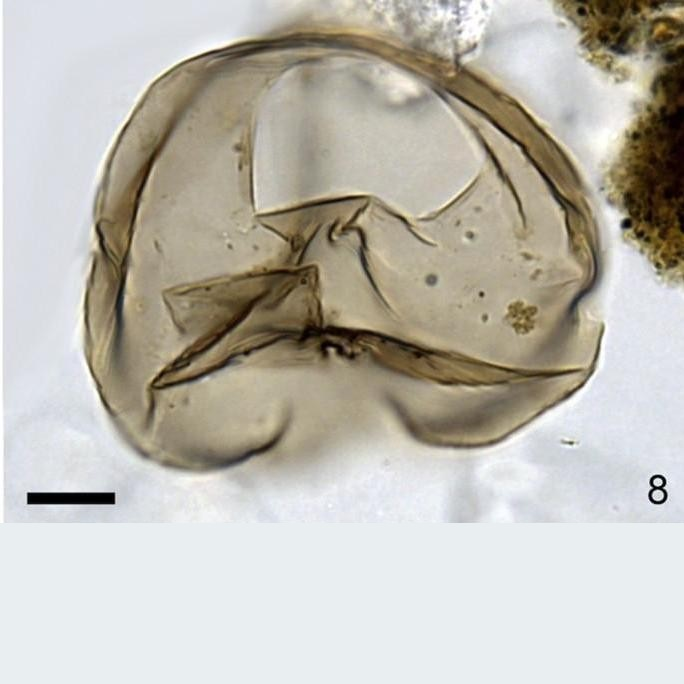 |
SmoothBrown |
PeridinioidApiculocavate andacuminate processes5 to 10 um. |
Longer processesRows of processes along cingular edges |
Selenopemphixquanta | 48 to 60 (D) |
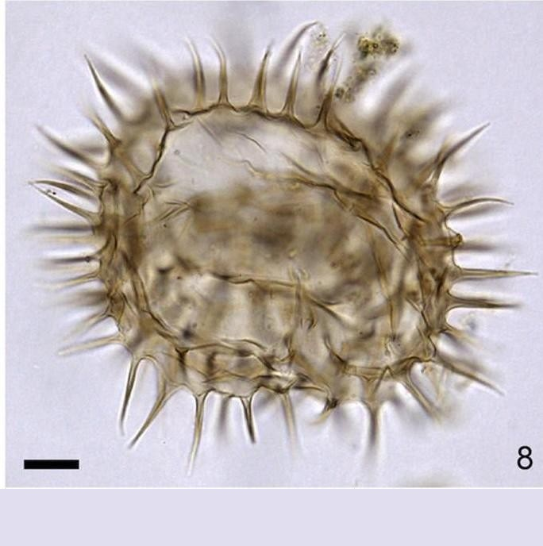 |
SmoothBrown |
Reniform in polar viewConcave epicyst flankDomed apex |
Very narrow cingulumNo processesConcave epicyst flanks |
Selenopemphixtholus | 46 to 50 (L)56 to 68 (W) |
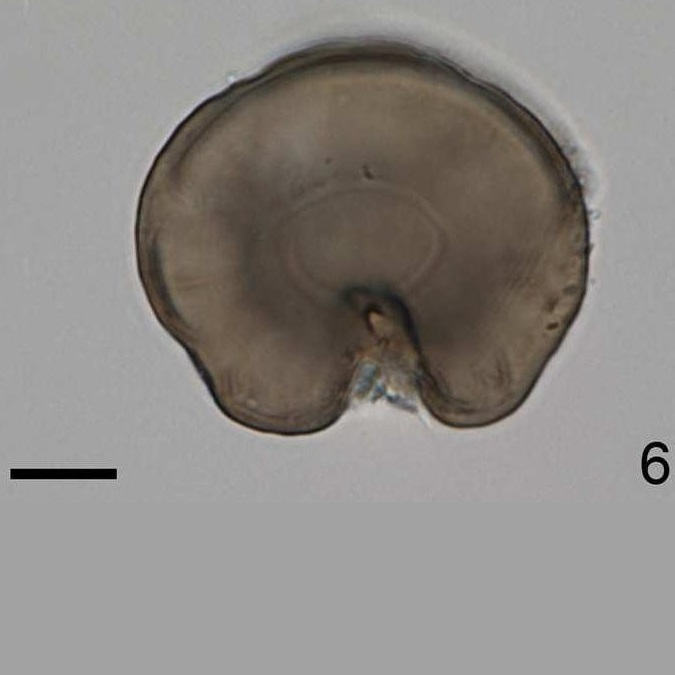 |
SmoothBrown |
Reniform in polar viewSmall antapical protrusions |
Undulate cingular marginLarge rounded archeopyle |
Selenopemphixundulata | 37.9 to 82.3 (L)49.5 to 89.4 (W) |
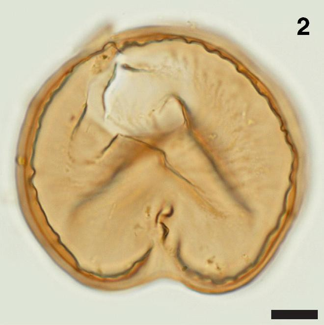 |
SmoothDark brown |
BiconicalConcave sides |
Cingulum expressed by two parallel ridgesNarrower hypocyst |
cysts ofProtoperidiniumbiconicum | 60 to 75 (L)75 to 90 (W) |
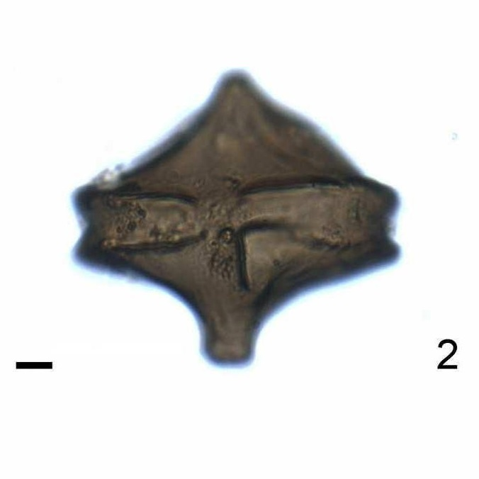 |
StriatedLight brown |
Reniform in polar viewEpicyst wider than hypocyst |
Sharp angles of archeopyleEpicyst wider |
cysts ofProtoperidiniumhumile | 55 to 65 (L)60 to 70 (W) |
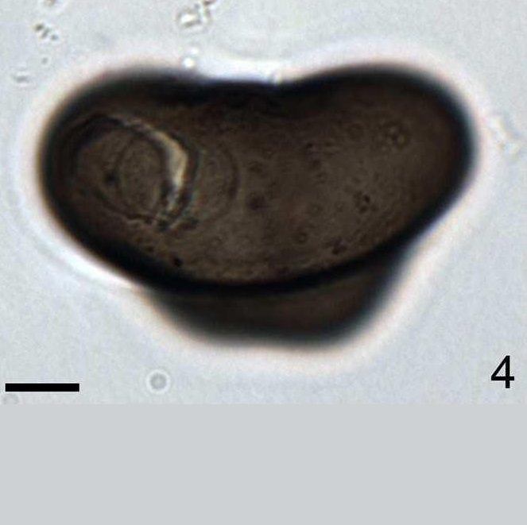 |
SmoothBrown |
SubsphericalSolid, conical, taper to sharp point processes10 um. |
Fewer processesMore slender processesWeak polar compression |
cysts ofProtoperidiniumnudum | 31 to 48 |
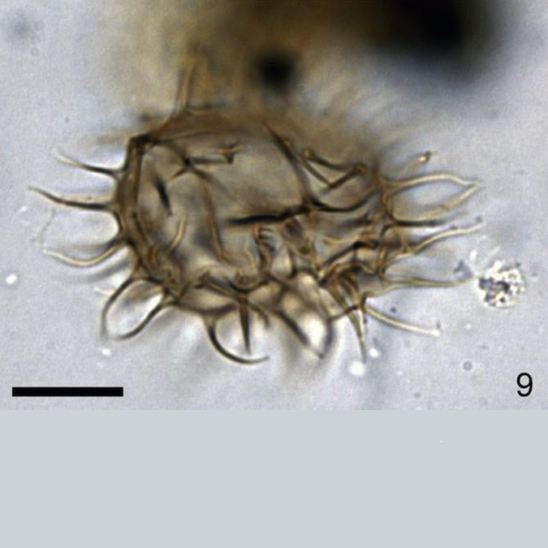 |
SmoothBrown |
PeridinioidConcave ventral areaConvex dorsal area |
Multifurcate processesThicker and darker processes at the distal ends.Shape |
Xandarodiniumxanthum | 46 x 63 |
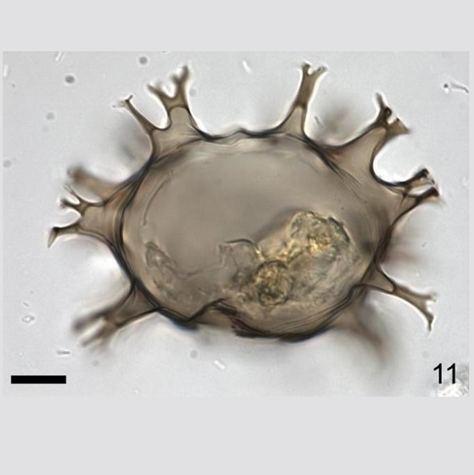 |